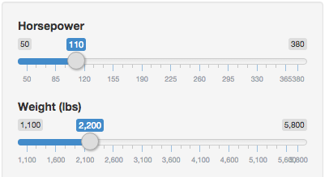
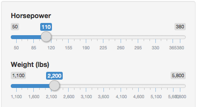

- Users are asked to input two variables which predict the transmission type (auto vs. manual)
- Horsepower - a number from 50 to 380 in increments of 10
- Weight (in lbs) - a number from 1100 to 5800 in increments of 100
User Input

Results

TJ Webb
Coursera Data Science Specialization Signature Track - Developing Data Products

Users are also given the opportunity to input the number of cylinders the engine has, either 4, 6 or 8. The application uses this, as well as horsepower and weight to predict the mpg.


The heart of the application is fitting a linear model with horsepower, weight, and number of cylinders from the mtcars dataset as well as a generalized linear model with horsepower and weight. These models are used to predict the mpg and transmission respectively.
For example, if a user inputs 110 horsepower, 2,200 lbs, and 6 cylinders we would predict the mpg and transmission.
am.glm = glm(am ~ hp + wt, data=mtcars, family=binomial)
mpg.lm = lm(mpg ~ hp + wt + cyl, data=mtcars)
am.prediction = predict(am.glm, data.frame(hp=110, wt=2200/1000), type="response")
mpg.prediction = predict(mpg.lm, data.frame(hp=110, wt=2200/1000, cyl=6))
We then report the predicted likelihood that this is a manual transmission 99.38% and the predicted fuel economy 24.2mpg
Why are these predictions not necessarily usable in the real world?
We are using a tiny dataset.
We are ignoring many variables from the dataset which may impact our predictions.
There are other engineering factors outside of this dataset that also impact the variablse we are trying to predict.
All of the above.
The dataset probably isn't big enough for what we are predicting.
We are data scientists and likely don't know enough about vehicle engines to begin to understand the factors that actually determine what we are trying to predict, but that's why we're here, to predict. Also the dataset includes an incredibly tiny amount of observations.